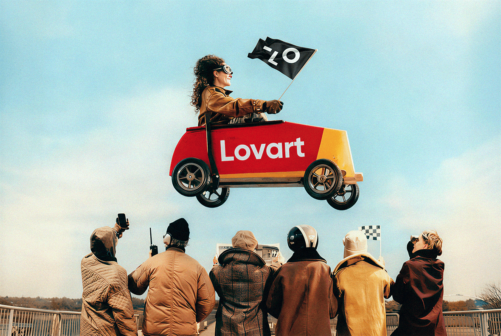
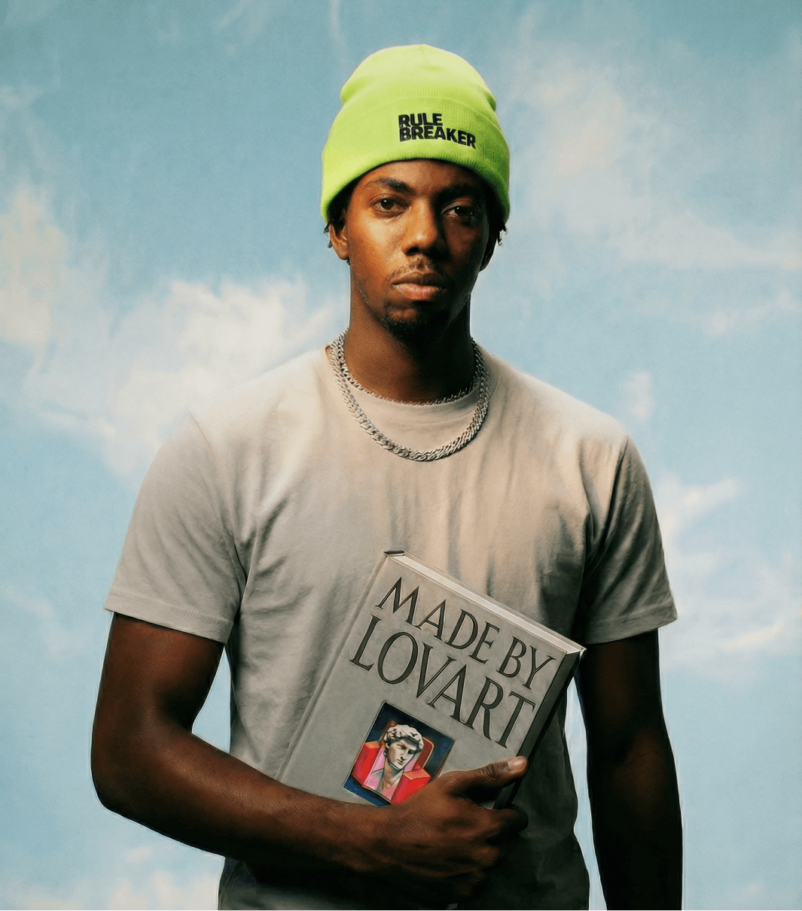
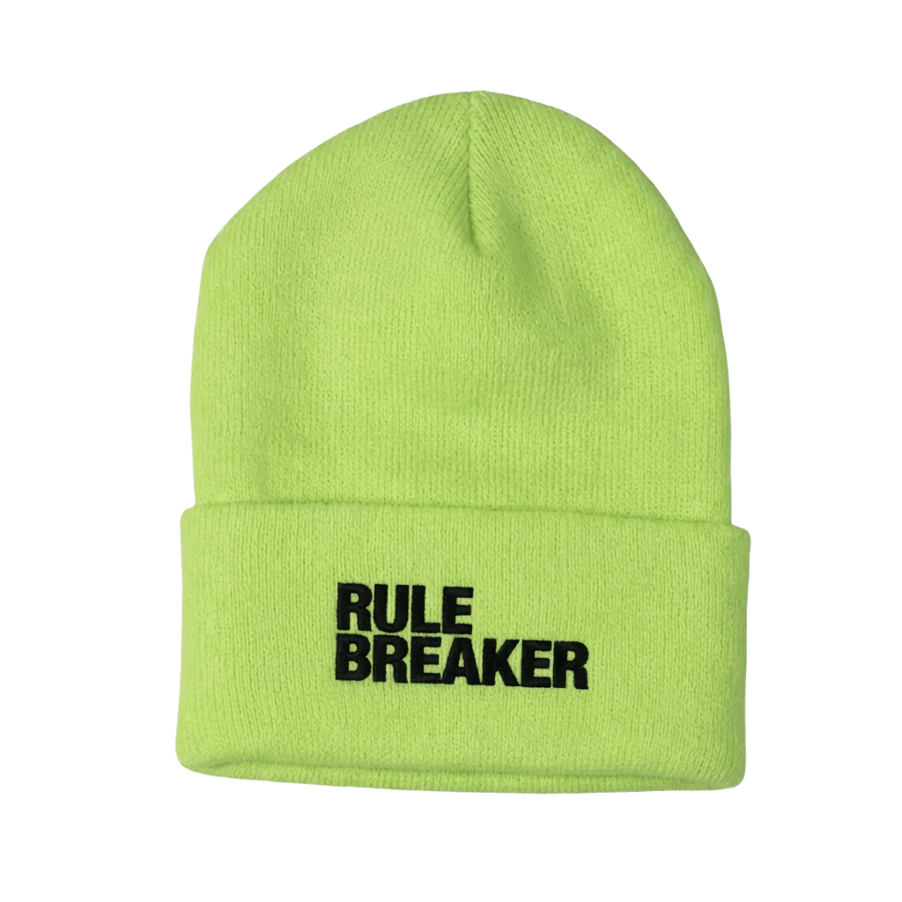
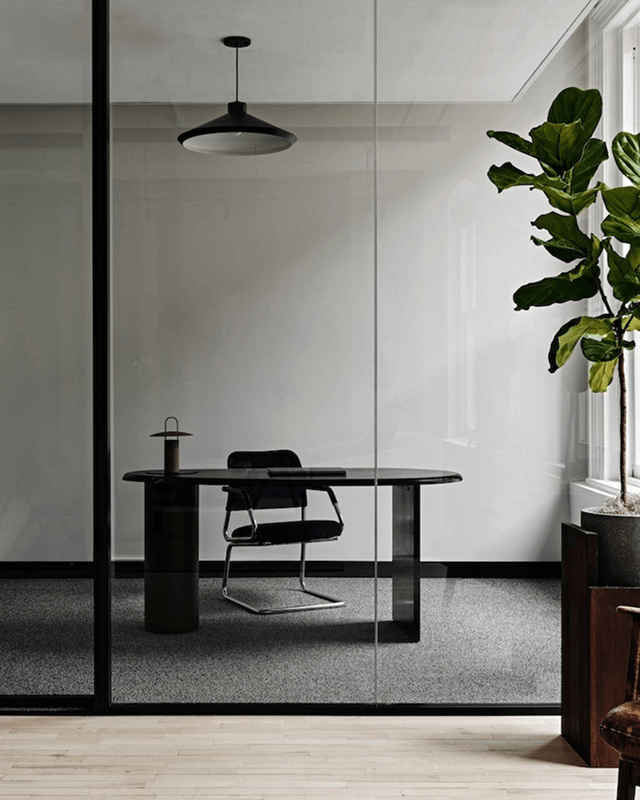
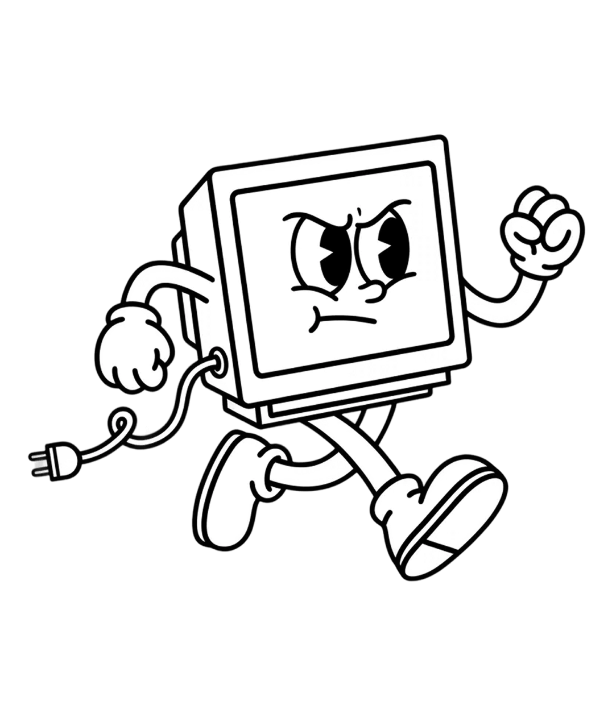
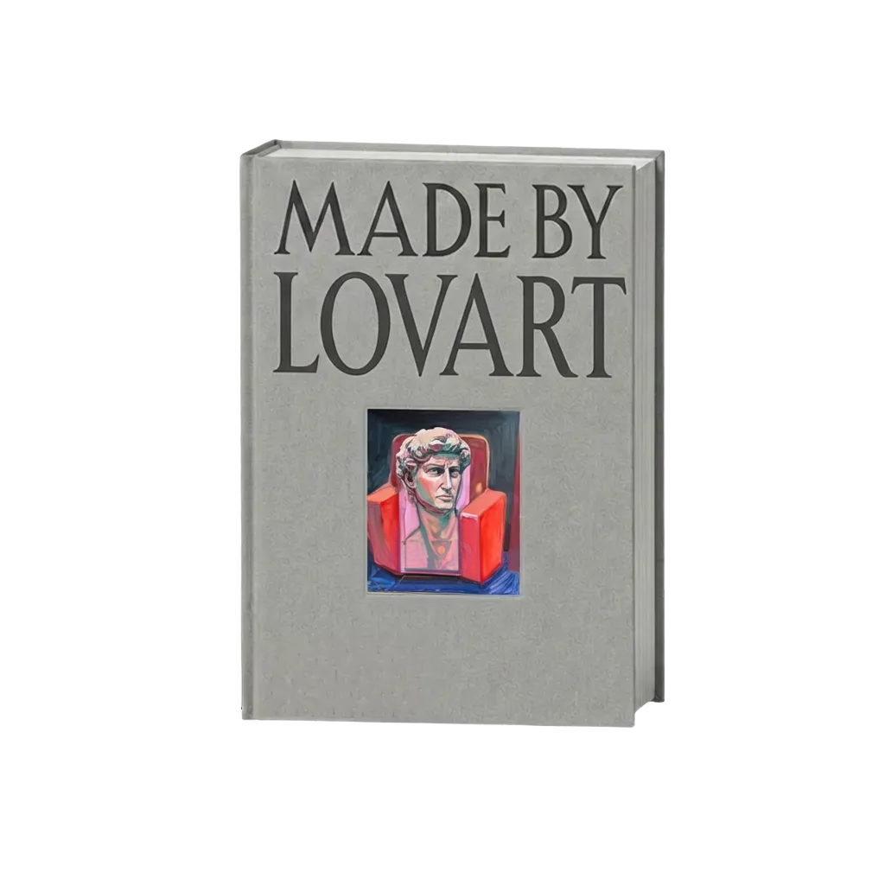

一个「会做设计的智能体」，不是又一个文生图
页面标题实测为 Lovart – World's First AI Design Agent。它整套视觉语言只服务一个论点：AI 的产出只是起点，价值在于像一个设计伙伴那样，把意图、参考、版式、文字一层层做进可继续编辑的成品。所以基调是克制优雅，不是炫技。
对外的官网，故意只用一对暖墨黑与纸白。
- 暖墨黑加纸白：底
#100F09、文字#F5F4EF，几乎不用鲜艳色 - 「强调色」就是纸白：
--accent实测解析为lab(96.52%)近白中性 - 衬线大标题用常规字重加微正字距承载优雅（见字体节）
- 真实工作台 mock 立可信度，不堆功能形容词
Mantine 主题里注册的彩色，落地页几乎不出现（推断留给应用内）。
- lovart-green 主色
#57C74A，亮#85FF75 - ocean-blue 主色
#09ADC3 - bright-pink 主色
#FF00A1 - 画布蓝
#147DFF做设计工具的选框与交互
要复刻的目标 = 编辑部级衬线优雅 × 设计工具界面隐喻 × 智能体过程可视化
把「一个设计智能体正在工作」直接演给你看——分析意图、检索参考、生成可编辑的视觉网格。这就是首屏那个工作台在做的事，也是本解构的重点，恰好可以直接挪用来展示仿真运行过程。
敢于只用一对暖黑与纸白
点任意色块复制其 HEX。上排是落地页真正在用的单色系与功能色，下排是应用内的 Mantine 三色（落地页几乎不出现）。它「高级」的根源不是某个漂亮强调色，而是这份克制。
落地页主色与功能色
应用内产品色板 · Mantine（落地页不用）
衬线大标题，用常规字重加微正字距
最关键的一条实测：H1 是 featureDisplay，48px / font-weight 400 / letter-spacing 0.48px / line-height 52.8px。也就是常规字重加微微张开的正字距，而非常见的粗体紧排——这正是它读起来克制优雅、像书籍内文标题的技术根源。本页已接入站点真实的 featureDisplay woff2 子集，下面每一处衬线示例都是原字（Fraunces 仅在字体未加载时兜底）。
本页已接入站点真实的 featureDisplay（商业字体，woff2 子集，含 400 / 400 斜体 / 500 三档）。上排是正体、下排是它的真实斜体（呼应官网眼镜战役标题）；仅在字体未加载时回落到 CDN 的 Fraunces。
featureDisplay · 真字
已接入真实 featureDisplay（400）。承载大标题与 section 标题，一律常规字重；Fraunces 兜底。
gtStandard · 真字
已接入真实 gtStandard（400 / 500）。导航、按钮、正文；站点正文计算样式亦回落 inter，本页 Inter 仅兜底。
gtStandardMono · 真字
已接入真实 gtStandardMono（400）。大写开字距眉标签、画布尺寸标注；JetBrains Mono 兜底。
poppins · barlowCondensed
零动画库，全靠 CSS keyframe 加状态
抽取未检出 GSAP、Lenis 等库（libs 为空），动效由 CSS @keyframes 与 React 状态驱动。样式表去重后共 8 条 cubic-bezier；下面是页面最常引用的五条，点任一卡片重放，曲线与时长为其真实取值。
双时间尺度：环境慢层叠手感微交互（真实时长）
最高频时长其实是 0.15s（出现 46 次）的微交互；另有 218s、5000s 这类秒级以上超长值（各 6 / 9 次）——推断用于渐变缓慢流动与走马灯的氛围层。两个尺度拉开：秒级以下保证跟手，秒级以上只做环境氛围。
签名 keyframe：agent-shimmer-sweep
站点自带的命名 keyframe（实锤）。推断是智能体思考步骤「进行中」时的一道微光扫过——本页工作台与下方即用它复现。
鼠标跟随高光 --glare-x/y
自定义属性里有 --glare-x、--glare-y、--edge-x、--edge-y（实锤）。这是卡片随指针渲染移动高光并做轻微 3D 倾斜的一套参数，解释了它卡片的实体质感。
把落地页本身做成一块设计画布
六个反复出现的母题，共同构成「这是在拆 Lovart」的识别度。下面每个都配一个可看的迷你演示。
设计工具隐喻
画板、Image 宽 x 高 角标、蓝色选框与四角手柄、prompt 气泡、来源徽标。浏览页面像在看别人操作软件。
智能体思考可视化
思考步骤逐条淡入，进行中的一步带 agent-shimmer-sweep 微光扫过，完成打勾。最适合挪用来展示仿真过程。
拼贴与剪贴簿
旋转粘贴的照片卡、便利贴、漂浮抠图物，带手作错落与纸感投影，冲淡数字界面的冷感。
填空式衬线标题
把大标题做成一张待填表单，关键词坐在下划线上循环变换。
纸质水彩底
暖墨黑叠纸纹理，局部一块很淡的水彩蓝，配合大留白与明暗节奏。
对话式产出
用一句自然语言指令直接改图（「把帽子换成这顶」），产出以真实感摄影占位，强调「可用」。
零 canvas，是它复刻门槛低的原因
媒体清单是信息量最大的一条实测：全站没有一个 canvas。工作台、思考步骤、视觉网格全由 DOM 加 CSS 加图片实现，没有 WebGL。
卡片与图片多为 3 到 20px 的理性小圆角（10px 出现最多、3px 次之），按钮一律 999px 全圆 pill。二者的对比是它的圆角签名。
- Mantine：React UI 框架（
--mantine-*断点与色板） - OverlayScrollbars：统一深色滚动条（
--os-*） - 自研 glare/tilt：鼠标跟随高光（
--glare-*、--edge-*） - 浮动 pill 导航：nav 本身透明，胶囊底色与模糊做在内层
- 主题与 i18n：footer 带 Auto/深/浅 三档切换与语言切换
真实渲染截图 + 站点提取的真实媒体，作证据
上排是对线上页面的真实渲染截图（playwright 抓取），不是本页的复刻。下排的视频与画廊是直接从 lovart.ai 提取的真实媒体（见 real-assets/manifest.json），本页原样嵌入，用来对照它产出内容的真实观感——请勿外发。


真实视频产出（站点提取，自动静音循环）
真实产出画廊（站点展示的产出 / 品牌素材）






把这些数值直接接进你的产品
完整版见同目录 复刻指南.md。这里给出可复制的 token 与两段签名效果代码。
1 · 落地 token（复制即用）
:root{
--bg:#100F09; --ink:#F5F4EF;
--canvas-blue:#147DFF;
--serif:"featureDisplay","Fraunces"; /* 站点真字·Fraunces 兜底 */
--sans:"gtStandard","Inter"; /* 站点真字·Inter 兜底 */
--mono:"gtStandardMono","JetBrains Mono";
--ease-main:cubic-bezier(.33,1,.68,1);
--ease-back:cubic-bezier(.34,1.56,.64,1);
--ease-btn:cubic-bezier(0,0,.2,1);
--pill:999px; --r-card:16px;
}
/* 铁律：显示体常规字重 + 微正字距 */
h1{font-family:var(--serif);font-weight:400;
letter-spacing:.01em;line-height:1.1}2 · 思考步骤微光（复现 agent-shimmer-sweep）
.step.active .txt{
background:linear-gradient(100deg,
var(--ink-3) 30%, var(--ink) 50%, var(--ink-3) 70%);
background-size:200% 100%;
-webkit-background-clip:text;background-clip:text;
color:transparent;
animation:agent-shimmer-sweep 1.2s var(--ease-std) infinite}
@keyframes agent-shimmer-sweep{
from{background-position:200% 0}
to {background-position:-200% 0}}
/* 完成态：打勾定格；随后 buildGrid() 触发网格 back 曲线弹入 */选型决策
- 工作台 / 思考步骤 / 视觉网格 → 纯 DOM 加 CSS 加 img（站点 canvas 为 0）
- 关键氛围段 → 少量 video（站点仅 2 段）
- 慢氛围（渐变流动、走马灯） → CSS keyframe 加 218s / 5000s 级超长时长，不引库
- 微交互 → CSS transition 加 0.15 到 0.2s，配减速曲线
工程坑
- 单色是策略：只用暖黑与纸白，彩色留给应用内，别急着加强调色
- 显示字重压到 400、字距设正，套粗体紧排就毁了优雅
- 纸白不是纯白：
#F5F4EF与#100F09都偏暖，少眩光 - reduced-motion 兜底：关打字机、微光、逐个弹入，直接显示终态
字体授权（本轮已接入真字，务必私有）
本页已把从 lovart.ai 提取的真实字体子集（featureDisplay 3 档、gtStandard 2 档、gtStandardMono 1 档，见 real-assets/manifest.json）以 @font-face 相对路径接入，用于逐像素比对。文件名显示为 Feature Display 与 GT Standard 系列，均为商业字体：仅限内部研究，不得随页面外发或用于生产，生产需自购授权。CDN 的 Fraunces、Inter、JetBrains Mono 已降级为未加载时的兜底。站点另有 featureDeck 等字族本轮未下载，未接入。
每个数值从哪来，什么是实锤、什么是推断
- 抽取方法
- 对公开线上页面做两层抽取：playwright 读关键节点的
getComputedStyle（浏览器实际渲染值），加服务端抓取 6 个样式表全文（约 1.03MB），文本解析统计色值、cubic-bezier、时长、圆角、keyframe 名、自定义变量及频次。不涉及登录态，不逆向安装包。第二轮进一步下载了站点真实资产（6 支字体 woff2、2 段 mp4、18 张关键图，清单见real-assets/manifest.json），并以相对路径原样接入本页，替换第一轮的近似替身。 - 实锤（源自抽取）
- 底色
rgb(16,15,9)与文字rgb(245,244,239)、按钮配方、H1 排版（48px/400/+0.48px/1.1）、字体家族名与真实字体文件（featureDisplay/gtStandard/gtStandardMono的 woff2，已内嵌）、8 条去重缓动与频次、时长梯、圆角梯、keyframe 名单（含agent-shimmer-sweep）、Mantine/OverlayScrollbars/glare 技术信号、媒体清单（canvas 0、video 2、svg 50、img 38）。 - 推断（观察 / 公开资料）
- 各缓动与时长的具体用途、画布蓝
#147DFF用作选框、填空标题与思考步骤的精确时序、工作台网格「眼镜战役」的主题编排、「落地页单色 / 应用内彩色」的策略解读。
一处观察被数据校正
凭观感容易以为这类「AI 设计」站会重度依赖 WebGL 或动画库。实测相反：canvas 为 0、未检出 GSAP/Lenis，签名效果全是 DOM 加 CSS。凡冲突处，以抽取数据为准。
局限与版权
抽取是某一时刻的首页快照，改版可能变化；未展开的交互态未必完整。第二轮起，首屏工作台的视觉网格、实拍区的视频与画廊均为从 lovart.ai 提取的真实字体与版权素材（清单见 real-assets/manifest.json），仅供内部逐像素比对，务必私有，不得随页面外发或用于生产。